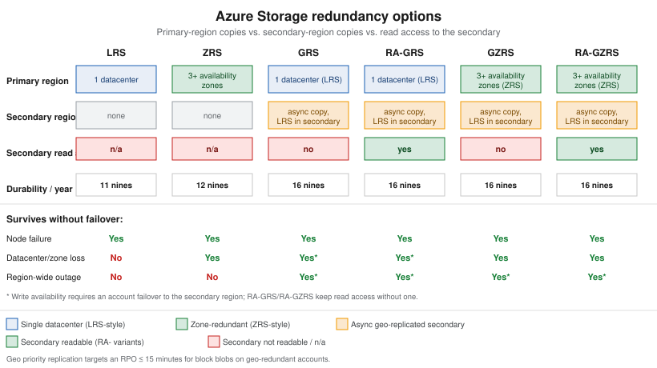

Storage Accounts
|
This content was generated with the assistance of AI and should be verified against the official documentation before being relied on in production. |
Examples on this page target Azure CLI 2.90.0 (az storage account / az storage command groups, no extension
required) and AzCopy 10.29; re-verify flag names and defaults against
the az storage account reference before relying on them,
since default SKUs and secure-by-default flags have changed more than once.
A storage account is the namespace and billing/security boundary for everything Bookshelf keeps in Azure
Storage: Blob containers, Azure Files shares, Queue Storage, and Table Storage all live inside one account and
share its redundancy setting, its firewall/private-endpoint configuration, and its encryption settings. This page
covers creating and securing the account itself — account types, redundancy, secure-by-default flags, networking,
and encryption — plus the tools used to move data in and out of it. The Blob-specific containers, tiers, and
lifecycle policies that live inside the account are covered on Blob Storage; this page
assumes that page’s stbookshelf account as its running example. Every account name must be 3-24 characters,
lowercase letters and digits only, and globally unique across all of Azure — stbookshelf is a placeholder used
throughout Bookshelf’s docs, not a name that is actually still available.
Account types
az storage account create --kind selects one of five account kinds; only three are recommended for new accounts:
| Kind | What it is |
|---|---|
|
The recommended kind for almost everything: Blob (including Data Lake Storage Gen2 with hierarchical namespace
enabled), Azure Files (standard, HDD-backed shares), Queue Storage, and Table Storage, on standard (HDD-class) or
premium (page-blob) hardware, at the lowest per-GB price point. |
|
Premium, SSD-backed hardware for block/append blob workloads that need consistently low latency and high
transaction rates, at a higher per-GB but lower per-transaction price than standard |
|
Premium, SSD-backed hardware dedicated to Azure Files (SMB and NFS), for latency-sensitive file-share workloads. Also LRS/ZRS only. |
|
The original, pre-2018 account kind. Microsoft blocked creating new GPv1 accounts in the Azure portal, is
blocking new GPv1 accounts through the Resource Manager API starting September 2026, and will retire GPv1 outright
on October 13, 2026: any account not migrated to GPv2 by then is auto-migrated, which can change its billing.
There is no reason to create a |
|
An older, blob-only predecessor to |
References: Microsoft Learn — Storage account overview, Microsoft Learn — GPv1 storage account retirement overview (checked 2026-09-26).
In the Azure portal
-
Search for Storage accounts and select Create.
-
On the Basics tab, choose the subscription and
$RG, name the accountstbookshelf, pick the region, and set Performance (Standard or Premium) and Redundancy (see below). Premium performance further splits into Premium block blobs (BlockBlobStorage) and Premium file shares (FileStorage) via a Premium account type selector; leave Standard selected forstbookshelf. -
On the Advanced tab, confirm Require secure transfer for REST API operations is Enabled, Allow enabling anonymous access on individual containers is Disabled, and Minimum TLS version is Version 1.2 — these are the portal’s own secure-by-default posture and match the CLI flags below.
-
On the Networking tab, choose Public access from selected virtual networks and IP addresses or Disable public access and use private access, and add a private endpoint if needed (see Networking below).
-
Review and create.
With the Azure CLI
export RG=rg-bookshelf
export LOCATION=eastus2
export SA=stbookshelf
az group create --name "$RG" --location "$LOCATION"
az storage account create \
--name "$SA" \
--resource-group "$RG" \
--location "$LOCATION" \
--kind StorageV2 \
--sku Standard_GRS \
--allow-blob-public-access false \
--allow-shared-key-access false \
--min-tls-version TLS1_2 \
--https-only trueRedundancy: LRS, ZRS, GRS, RA-GRS, GZRS, RA-GZRS
Redundancy is set per account (--sku) and applies to every service inside it. Two independent choices combine
into the six SKUs: how data is replicated within the primary region (locally, to one datacenter, vs. across
zones), and whether it is also copied to a paired secondary region, and if so, whether that secondary copy is
readable.
| Option | What it means |
|---|---|
LRS (locally redundant) |
Three synchronous copies within a single datacenter in the primary region. Cheapest option; survives a disk, node, or rack failure but not a datacenter-wide event. At least 11 nines (99.999999999%) durability per year. |
ZRS (zone-redundant) |
Synchronous copies across three or more availability zones in the primary region — separate datacenters with independent power/cooling/networking. Survives a zone/datacenter loss with no failover and no interruption to writes. At least 12 nines durability per year; Microsoft recommends it as the default for Azure Files workloads. |
GRS (geo-redundant) |
LRS in the primary region, plus an asynchronous copy (again replicated as LRS) to the paired secondary region. The secondary copy is not readable unless an account failover is triggered. At least 16 nines durability per year. |
RA-GRS (read-access geo-redundant) |
GRS plus a read-only endpoint ( |
GZRS (geo-zone-redundant) |
ZRS in the primary region, plus an asynchronous copy (replicated as LRS) to the secondary region. Combines zone resilience in the primary region with regional disaster recovery. At least 16 nines durability per year. |
RA-GZRS (read-access geo-zone-redundant) |
GZRS plus the same always-on read-only secondary endpoint as RA-GRS. |

Failover from GRS/RA-GRS/GZRS/RA-GZRS to the secondary region (az storage account failover) is a customer-
triggered, one-way operation: it promotes the secondary to primary, updates DNS, and can lose the most recent
writes still in flight asynchronously. Azure Storage’s geo priority replication targets a recovery point
objective (RPO) of 15 minutes or less specifically for block blobs on geo-redundant accounts, though the RPO is
best-effort, not a contractual SLA. BlockBlobStorage and FileStorage accounts only support LRS/ZRS — there is
no geo-redundant premium tier — so a Bookshelf workload that genuinely needs premium performance and
cross-region disaster recovery has to build that at the application layer (e.g. writing to two premium accounts
in different regions) rather than relying on a storage-account SKU. stbookshelf uses Standard_GRS in these
examples as a reasonable default for a small application; move to Standard_RAGZRS if Bookshelf needs both zone
resilience and a readable secondary, or down to Standard_LRS for throwaway/dev environments where the extra
durability isn’t worth the cost.
References: Microsoft Learn — Azure Storage redundancy, Microsoft Learn — Disaster recovery and storage account failover, Microsoft Learn — Geo priority replication (checked 2026-09-26).
Networking: firewall, service endpoints, and private endpoints
By default a new account accepts traffic from any network as long as the request is authenticated; three layers narrow that, from least to most restrictive:
-
Firewall (resource-instance and IP rules) —
--default-action Denyon the account, then allow specific public IP ranges or specific Azure resource instances (e.g. a particular Container Apps environment) through the exception list. Traffic still crosses the public Azure network backbone. -
Service endpoints — extend a virtual network’s identity to Azure Storage over the Microsoft backbone, so a firewall rule can allow "this subnet" instead of an IP range; traffic still reaches the storage account’s public endpoint, just tagged with the VNet’s identity.
-
Private endpoints — a private IP address inside a VNet’s subnet, backed by Azure Private Link, that maps to one specific sub-resource of the account:
blob,file,queue,table,web(static website), ordfs(Data Lake Storage Gen2). Each sub-resource needs its own private endpoint, and a private endpoint fordfsshould be paired with one forblobsince some Data Lake operations are redirected between the two. A private endpoint needs a matching private DNS zone (privatelink.blob.core.windows.net,privatelink.file.core. windows.net, and so on) linked to the VNet so that the account’s normal hostname resolves to the private IP instead of the public one — without that DNS link, clients still resolve to the public endpoint and the private endpoint has no effect.
Bookshelf’s network already exists — vnet-bookshelf (10.1.0.0/16) with the private-endpoint subnet
snet-data (10.1.1.0/24), peered to the hub vnet-hub-bookshelf, all built in
Virtual Networks — so stbookshelf’s blob private endpoint goes into that subnet rather
than into a VNet of its own. Three DNS pieces are needed on top of the endpoint itself: the
`privatelink.blob.core.windows.net zone, a link from that zone to each VNet whose clients must resolve the
private name, and a DNS zone group on the private endpoint. The zone group is what actually writes (and later
maintains) the A record for stbookshelf in the zone; a zone and link without it leave the zone empty, and
stbookshelf.blob.core.windows.net keeps resolving to the public endpoint.
export VNET=vnet-bookshelf
export SUBNET=snet-data
az network private-endpoint create \
--resource-group "$RG" \
--name "pe-$SA-blob" \
--vnet-name "$VNET" \
--subnet "$SUBNET" \
--private-connection-resource-id "$(az storage account show --name "$SA" --resource-group "$RG" --query id -o tsv)" \
--group-id blob \
--connection-name "pe-$SA-blob-conn"
# zone and VNet links -- skip any already created on the Virtual Networks page
az network private-dns zone create --resource-group "$RG" --name "privatelink.blob.core.windows.net"
az network private-dns link vnet create --resource-group "$RG" \
--zone-name "privatelink.blob.core.windows.net" --name "link-$VNET" \
--virtual-network "$VNET" --registration-enabled false
az network private-dns link vnet create --resource-group "$RG" \
--zone-name "privatelink.blob.core.windows.net" --name "link-vnet-hub-bookshelf" \
--virtual-network vnet-hub-bookshelf --registration-enabled false \
--resolution-policy NxDomainRedirect
# zone group: registers pe-$SA-blob's private IP as the A record for stbookshelf in the zone
az network private-endpoint dns-zone-group create \
--resource-group "$RG" \
--endpoint-name "pe-$SA-blob" \
--name default \
--private-dns-zone "privatelink.blob.core.windows.net" \
--zone-name blobThe hub link uses --resolution-policy NxDomainRedirect (fallback to internet) because vnet-hub-bookshelf is
also `vgw-bookshelf’s VNet, and the gateway must still resolve Microsoft-owned blob endpoints that have no
record in this zone; see the private DNS section of Virtual Networks.
References: Microsoft Learn — Configure Azure Storage firewalls and virtual networks, Microsoft Learn — Use private endpoints for Azure Storage, Microsoft Learn — az network private-endpoint command reference, Microsoft Learn — az network private-endpoint dns-zone-group command reference, Microsoft Learn — Azure Private Endpoint DNS integration scenarios (checked 2026-09-27).
Encryption
Every storage account encrypts data at rest automatically; the only choice is who manages the key:
-
Microsoft-managed keys (the default) — Azure owns and rotates the keys transparently; no configuration needed.
-
Customer-managed keys (CMK) — the account is configured to use a key stored in Azure Key Vault (or a Managed HSM) that the customer controls, so the customer can rotate, disable, or revoke it, at the cost of managing that key’s own availability (if the key becomes inaccessible, the account’s data becomes inaccessible too). Bookshelf’s
kv-bookshelfKey Vault, covered on Identity and Access, is the natural place to hold such a key if a compliance requirement calls for CMK.
In-transit encryption is enforced by the --https-only true flag set at creation time above (HTTPS-only,
TLS 1.2 minimum), independent of the at-rest key choice.
References: Microsoft Learn — Azure Storage encryption for data at rest, Microsoft Learn — Customer-managed keys for Azure Storage encryption (checked 2026-09-26).
Azure Files, Queue Storage, Table Storage, and managed disks
stbookshelf also exposes three other services beyond Blob storage, each addressable through the same account:
-
Azure Files — fully managed SMB and NFS file shares, mountable from Windows, Linux, and macOS clients, or from a Kubernetes pod via the Azure Files CSI driver. Standard (HDD,
StorageV2) shares support LRS/ZRS/GRS/ GZRS; premium SSD shares (FileStorageaccounts) support LRS/ZRS only. The Spring Boot side of mounting Azure Files into a container platform — the CSI driver,PersistentVolumeClaim,StorageClass— is covered on File Storage & Object Stores; this page only covers provisioning the share itself. -
Queue Storage — simple, durable FIFO-ish message queues for decoupling
orders-apifrom thenotifierworker; for anything needing ordering guarantees, dead-lettering, or sessions, Bookshelf uses Service Bus instead (out of scope here). -
Table Storage — a NoSQL key/value store (partition key + row key) for high-volume, low-cost structured data that doesn’t need a relational schema; Azure now recommends Azure Cosmos DB for Table for new workloads that need guaranteed low-latency global distribution, keeping Table Storage for simpler, single-region needs.
-
Managed disks — the persistent disks backing IaaS virtual machines and AKS nodes. They are a distinct resource type (
Microsoft.Compute/disks), not blobs inside a storage account, but share the same LRS/ZRS redundancy vocabulary; managed disks do not support GRS/GZRS, so cross-region disk-level DR requires a separate mechanism (snapshots copied to another region, or Azure Site Recovery).
Moving data in and out
| Tool | When to reach for it |
|---|---|
AzCopy |
The command-line tool for high-throughput copy/sync jobs (local-to-cloud, cloud-to-cloud, container-to-
container). [source,bash] ---- azcopy login azcopy copy "./dist/*" "https://$SA.blob.core.windows.net/<container>" --recursive ---- |
Azure Storage Explorer |
A free, cross-platform (Windows/macOS/Linux) desktop GUI for browsing and managing blobs, files, queues, and tables across subscriptions — useful for ad hoc inspection during development; it authenticates the same way as the CLI, via Entra ID sign-in. |
Azure Data Box |
A physical, Microsoft-shipped appliance for bulk offline data transfer (terabytes to petabytes) when the network link to Azure is too slow or too expensive for the volume involved — data is copied onto the device on-premises, shipped back to a Microsoft datacenter, and ingested directly into the target storage account. Overkill for Bookshelf’s own workloads; relevant mainly for a large one-time migration. |
Azure File Sync |
Keeps an on-premises Windows Server file share in sync with an Azure Files share, with optional cloud tiering (cold files kept only in Azure, referenced from the server as a stub). Relevant for a hybrid on-premises/cloud file-server scenario, not for Bookshelf’s cloud-native services. |
Azurite |
A local, open-source emulator for Blob, Queue, and Table Storage, used in development and integration tests
instead of a real account. Install via |
References: Microsoft Learn — Authorize access for AzCopy with a user identity, Microsoft Learn — Authorize access for AzCopy with a managed identity, Microsoft Learn — Azure Storage Explorer overview, Microsoft Learn — Azure Data Box overview, Microsoft Learn — Azure File Sync overview, Microsoft Learn — Install and run the Azurite emulator (checked 2026-09-26).
Pricing and limits
Cost is driven by the account kind and SKU (redundancy), the access tier of the data stored (covered per-blob on Blob Storage), and the volume of read/write/list transactions — geo-redundant SKUs cost noticeably more per GB than LRS because every byte is stored at least six times (three in the primary region, three more in the secondary), and RA- variants add a small premium on top of that for the always-on read endpoint. A single storage account has generous but finite default limits (request rate, ingress/egress, and capacity) that scale with account type; a workload that is likely to be throttled should be split across multiple accounts rather than pushed against those limits. Consult the pricing calculator and the current limits page before committing to a SKU, since both are revised periodically: Azure Storage pricing and Microsoft Learn — Scalability and performance targets for standard storage accounts (checked 2026-09-26).
Clean up
az group delete --name "$RG" --yes --no-waitThis removes stbookshelf and every other resource created in $RG on this page, including the private
endpoint, private DNS zone, and virtual network. Deleting an account is immediate and does not go through a soft-
delete stage itself, but soft-deleted blobs or blob versions inside it (if soft delete was enabled) do not need a
separate purge step — they are removed along with the account.
References
-
Microsoft Learn — az storage account create command reference
-
Microsoft Learn — Disaster recovery and storage account failover
-
Microsoft Learn — Configure Azure Storage firewalls and virtual networks
-
Microsoft Learn — az network private-endpoint command reference
-
Microsoft Learn — Customer-managed keys for Azure Storage encryption
-
Microsoft Learn — Authorize access for AzCopy with a user identity
-
Microsoft Learn — Authorize access for AzCopy with a managed identity
-
Microsoft Learn — Scalability and performance targets for standard storage accounts